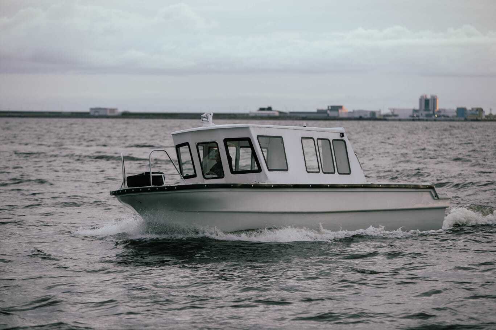
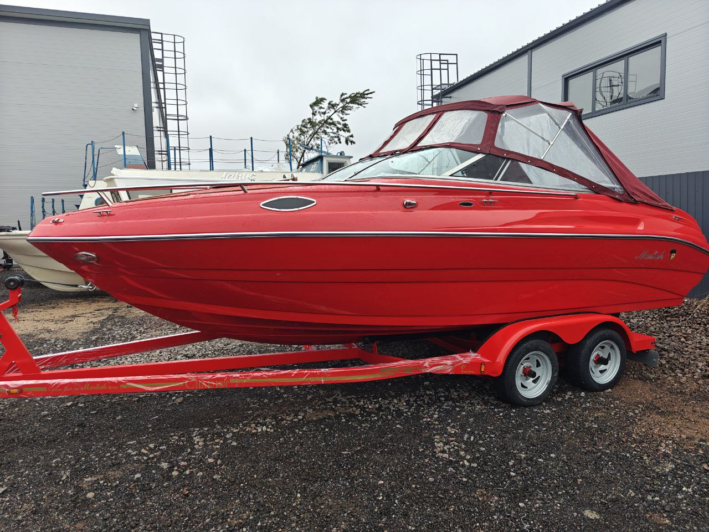
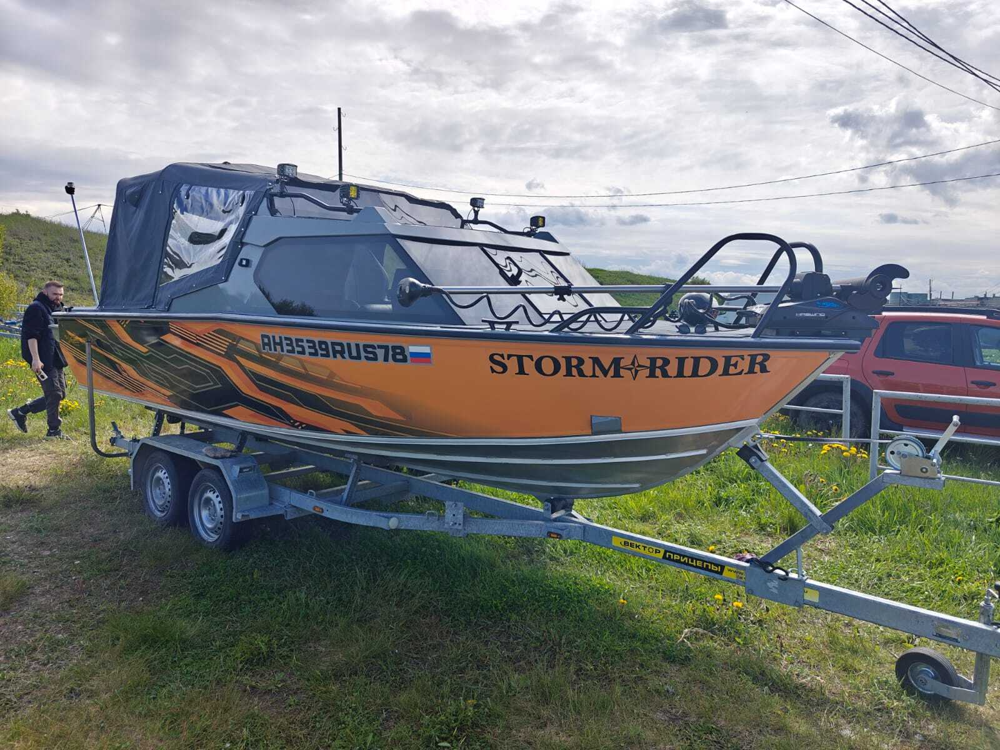
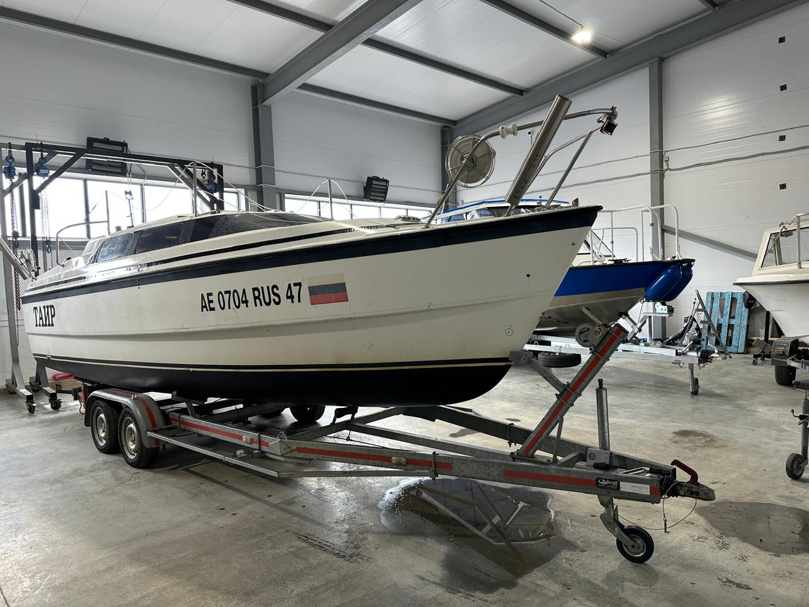
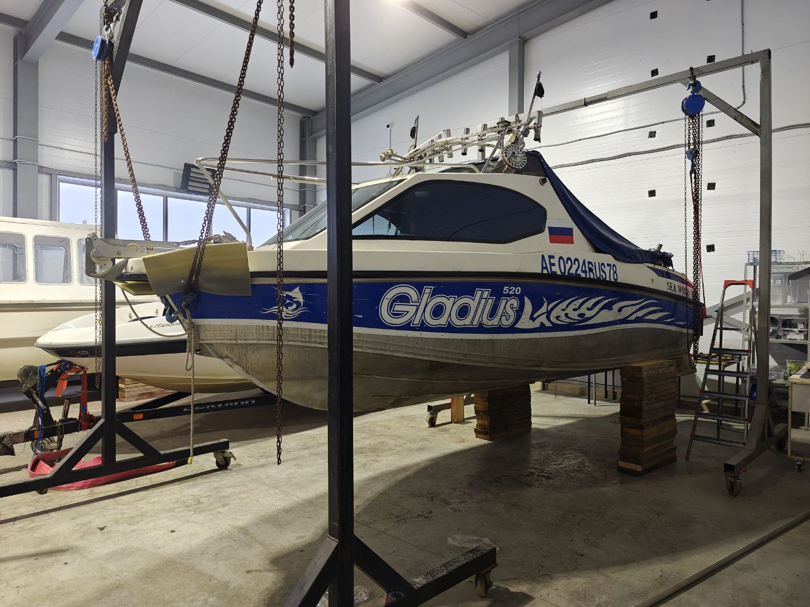
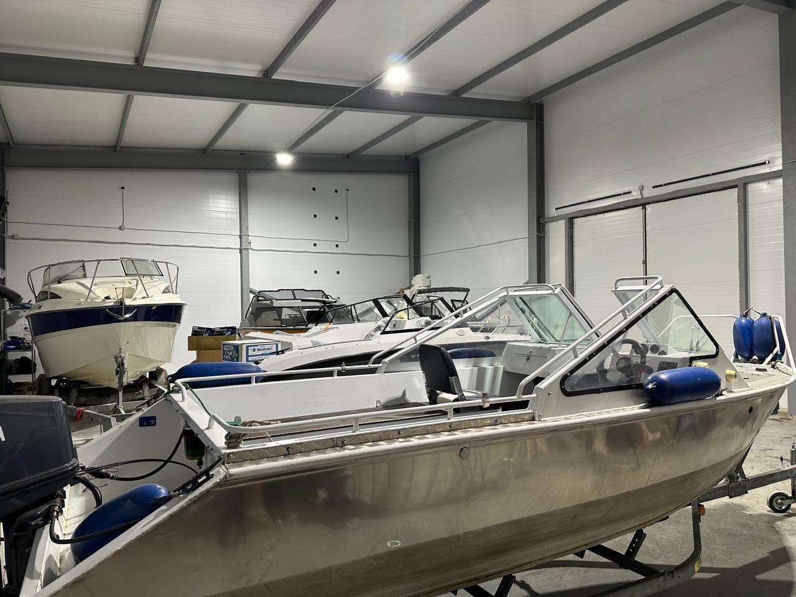

Механика
ТО, диагностика, ремонт и установка двигателей
Обсудить задачу ↗ Бодрый
БодрыйТюнинг ремонт модернизация
От технического обслуживания и установки оборудования до полной реконструкции катера.
Полный цикл работ
ТО, диагностика, ремонт и установка двигателей
Обсудить задачу ↗Алюминий, стеклопластик, сварка, усиление и покраска
Обсудить задачу ↗Новая проводка, АКБ, зарядка и освещение
Обсудить задачу ↗Эхолоты, картплоттеры, радары, автопилоты и связь
Обсудить задачу ↗Перешивка салона, EVA, искусственный тик и тенты
Обсудить задачу ↗Отопители, музыка, гидравлика, электромоторы
Обсудить задачу ↗Реальные работы
Сложные инженерные проекты, аккуратная отделка и оборудование, проверенное в реальной эксплуатации.
Все проекты →
Корпус, новая палуба, самоотлив и новый двигатель
Читать кейс ↗
Полировка, тормозная система и перешивка салона
Читать кейс ↗
От пустого корпуса до комплектации «люкс»
Читать кейс ↗
Ремонт корпуса и необрастающее покрытие
Читать кейс ↗
Новый фальшкиль после сильного удара
Читать кейс ↗
Опыт на воде
«Бодрый Боцман» начал путь с морских прогулок по фортам Кронштадта. Три года коммерческой эксплуатации дали нам практический опыт с разными лодками и катерами. Сегодня этот опыт работает в собственном тюнинг-центре.
Предварительная оценка
Опишите задачу и приложите ссылку на фото — сориентируем по стоимости и срокам.
Как добраться
Последний участок — неровная дорога. С прицепом двигайтесь аккуратно.
Съезд с Гостилицкого шоссеОриентир на карте — точка «Якорь».
Держитесь маршрутаПосле съезда остаётся около одного километра.
Финиш в промзонеСледуйте к конечной точке, отмеченной на карте.